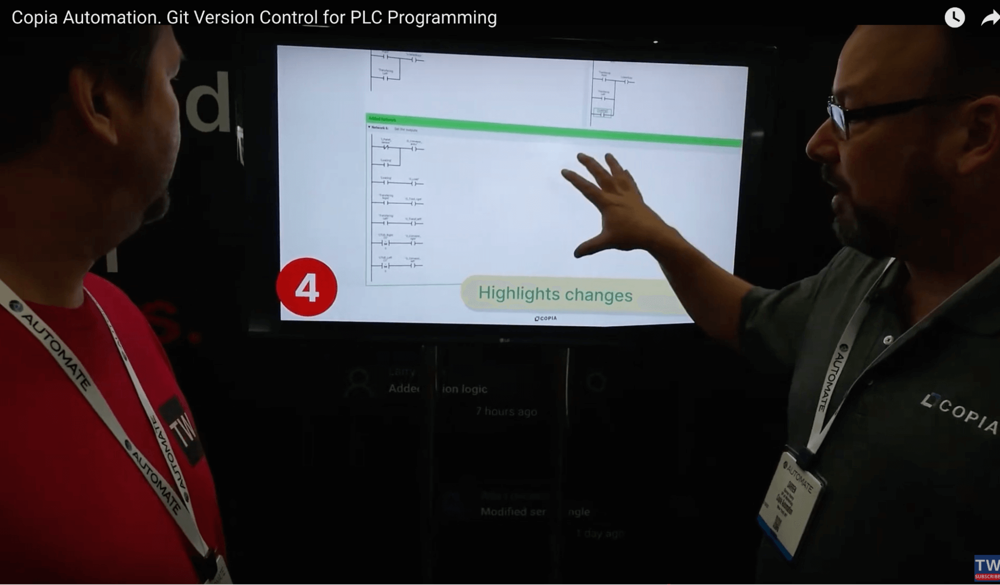
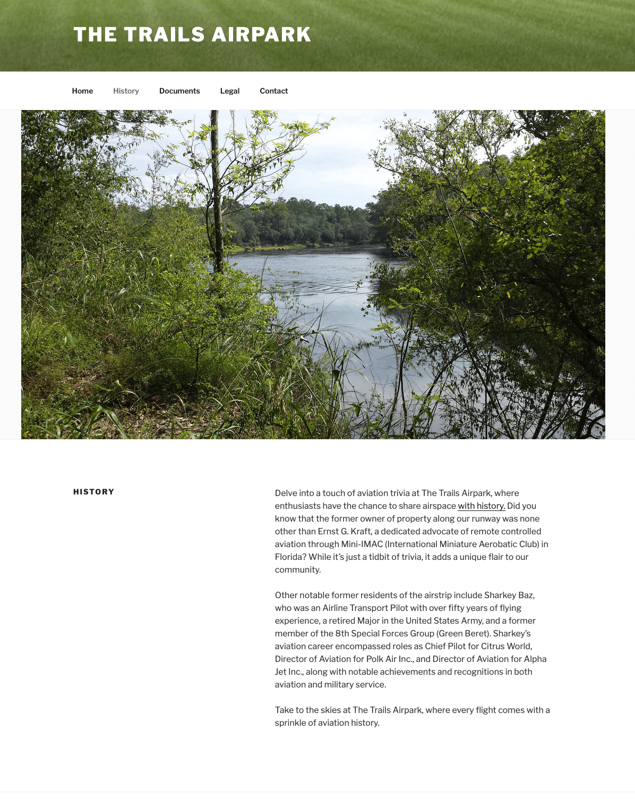

Portfolio: Philip Peterson
Copia Automation: Diffing and Merge Tool (2022)
The software behind conveyor belts, robotics, and machinery (known as
"Industrial Automation") is stuck in the Dark Ages. When controls engineers need to change code,
they typically edit project files without version control, attempting to manually track the versions via
filename. This procedure is prone to error, data loss, and lack of visibility.
Therefore, there were opportunities abound to sell a record-keeping system to these
engineers. And what better to power records than Git, the distributed version control system? COPIA is an
application similar to Github but for managing industrial automation code.
This project's goal was to implement a visual merge conflict editor. Because
the code being written in the Industrial Automation space is largely visual programming, merge conflicts are
also visual, and graph-based instead of text-based.

Close collaboration between me and our designer, Sinan Goral, was key to this
project. Myriad edge cases required support, since certain blocks in a project might be password-protected
and could not be displayed, but they still needed to be logically mergeable.
diffing and merging tool
for use in a vertical so absent of productivity
upgrades that they still employ floppy disks regularly.
Proud to say we improved people's lives and workflows on this one!
ATC Sim (2015)
Could you be an Air Traffic Controller? Well, if you can beat this game, you just
might have the chops required.
This is a casual arcade game made using Processing.js and joins game design together
with music to create an exciting and hair-raising experience.
For this project, I was fortunate enough to secure the blessing of Antonio
Pompa-Baldi to use his brilliant performance of Chopin's Winter
Wind piano etude to heighten the tension to its maximum.
Play
Online
Soundtrack courtesy of Antonio Pompa-Baldi
Amplitude Analytics (2016-2018)
At Amplitude, together we implemented many great business analytics features. I
joined the company early in its history, Series A, as part of the Applications Team, and implemented:
- Chart Legends - Persistent customizable labels for different parts of a chart
- Team Spaces - A collaboration feature to democratize and socialize data analyses via user profiles
- Time Travel - Tools for easily changing date ranges
- Data Export - Integrations with Urban Airship and Braze, popular mobile engagement platforms at the time
This was a very close-knit team, and we had the privilege of building an application
and a culture nearly from scratch together. I will always remember Amplitude as one of my foundational
experiences.
Riven, Prison Island: Dynamic Sky Shader (2012)
Toward the goals of the long-running Riven remake project I was part of, I partnered
with the brilliant Everett Gunther, an artist of many disciplines, to create this dynamic sky shader.
It was implemented in Unity 3D using ShaderLab, a multi-target Cg/HLSL toolkit. The
design was delivered to me as a Blender material node graph (hundreds of nodes) which I then converted into
code. It pushed up against the instruction limits for shaders at the time.
A controller was written to dynamically swap in and out sky images (streaming from the hard disk), fading between
frames (4 frames per texture, each stored as a single-channel greyscale frame in RGBA channels). I also
wrote the game logic for this area.
The sky was eventually turned into a commercial product, Ultra Dynamic Sky.
The Trails Airpark: Public Website (2024)
This was a pro-bono piece of work I did, a Wordpress implementation of a website for
a private neighborhood, supporting bulletin board postings such as budget PDFs and meeting minutes.
I wrote the website copy to evoke an image of the peaceful and natural surroundings
that the community represents, while also portraying some of the historical context unique to the
airpark.
